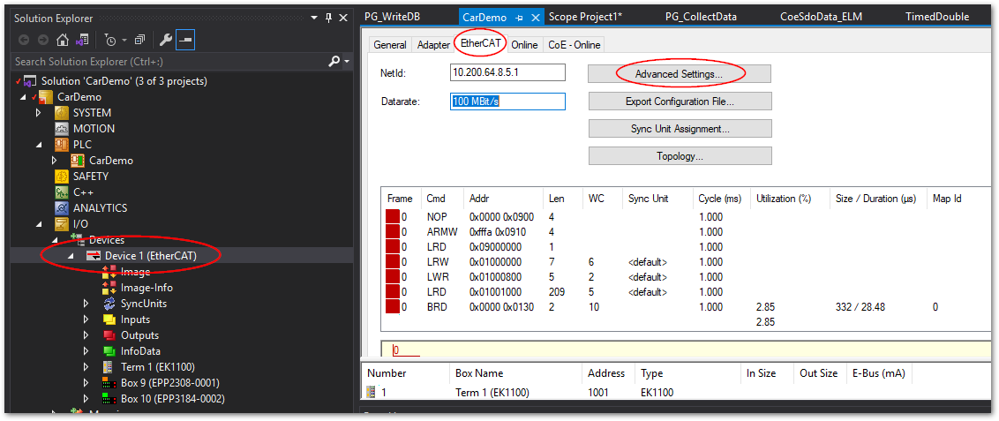

4.4. EtherCATスレーブごとのフレームエラーの記録方法をおしえてください#
TwinCAT上の各スレーブでは、前段のターミナルから届いたフレームをチェックし、次の種類のエラー毎に個別にカウントし、特定のレジスタに記録する機能があります。
- ロストリンクカウンタ
Ethernet物理層がケーブルの断線等を検出し、リンクが切れた事を表します。接触不良やEMC障害によって一時的に異常な電位となる場合にこの症状となります。
- RXエラーカウンタ
物理層におけるチェックで、フレーム内のデータ異常、電位の異常を検出した際にこのエラーとなります。
- CRCエラーカウンタ
ソフトウェア演算により巡回冗長検査によるサムチェックを行い、照合異常となった場合このエラーになります。
これらのカウンタ値をEtherCATマスターに読みだしてログ記録する機能について説明します。
4.4.1. 設定手順#
EtherCATマスターのメニューから、
EtherCATタブを開き、Advanced Settings...ボタンを押します。
ツリーメニューから
State Machine>Master Settingsから、Log CRC Countersのチェックを外します。
警告
本設定は、計測が終了したら必ず元へ戻してください。EtherCATターミナル内のCRCやRXエラーのカウンタは、1byteの最大値である255に達するとそのあとはカウントを停止します。このため、以後CRCエラーが検出できなくなります。
Log CRC CountersをONにすることにより、EtherCATマスターは、ターミナル内のレジスタを読み取ると、直後にクリアコマンドを発行し、レジスタをゼロリセットします。この値がマスター側のメモリ内に積算保持されます。この積算値は、次図のとおりOnlineタブのCRC列内でカウント表示されます。しかし再起動やActive Configuration等を行うことにより自動的にクリアされてしまいますので、このような場合でもCRCエラーカウント値を保持したい場合に限り、本手順にてLog CRC CountersをOFFに設定してください。また、255（0xFF）に達した場合は、再度
Log CRC Countersのチェックを入れてActive configurationを行い、OPに移行するとリセット可能です。
ツリーメニューから
Diagnosis>Online Viewを選択し、図 4.1 のとおり6個所にチェックを入れます。
図 4.1 オンライン診断設定#
注釈
0300～0306 CRC A - D のチェックは、前項の手順で
Log CRC CountersをOFFにした場合のみおこなってください。Active configurationを行ってRUNモードにし、
Onlineタブを開きます。図 4.2 のとおり、各ターミナルのレジスタの現在値が2byteづつ一覧されます。各カウンタは、表 4.1の通り1byte単位で割り当てられていますので、各値の16進表記部の上位2桁、下位2桁をそれぞれ異なる値として読み取ってください。

図 4.2 EtherCATオンライン診断画面#
たとえば、Term 1 EK1100のPort0のリンク切れは、下位2桁が0x20なので32回発生していることがわかります。
4.4.2. オンラインビューの見方#
EtherCATのターミナルのポートの概念は図 4.3 のとおりです。また、各ポートは、前段のターミナルからフレームが到着した際にチェックされ、カウンタ値を更新します。
例えばEtherCATカプラEK1100等の場合は、INPUTとOUTPUTがあり、それぞれPort0とPort2に接続されています。カプラに取り付けられた各IOターミナルに向けてはPort1が接続されます。Port0については前段のターミナルからのINPUTフレームをチェックします。Port1は、カプラに取り付けられた各ターミナルから返ってきたフレームをチェックします。Port2については、本カプラの後段のターミナルから返ってきたフレームをチェックします。
これらの各カウンタ値は1byteのサイズとなっています。よってオンラインビュー上では16進数の上位2桁、下位2桁を分けて値を確認してください。

図 4.3 EtherCATターミナルのポート概念#
レジスタアドレス |
長さ |
説明 |
|---|---|---|
0x0300 |
1 byte |
ポート0のCRCエラーカウンタ |
0x0301 |
1 byte |
ポート0のRXエラーカウンタ |
0x0302 |
1 byte |
ポート1のCRCエラーカウンタ |
0x0303 |
1 byte |
ポート1のRXエラーカウンタ |
0x0304 |
1 byte |
ポート2のCRCエラーカウンタ |
0x0305 |
1 byte |
ポート2のRXエラーカウンタ |
0x0306 |
1 byte |
ポート3のCRCエラーカウンタ |
0x0307 |
1 byte |
ポート3のRXエラーカウンタ |
0x0310 |
1 byte |
ポート0のロストリンクカウンタ |
0x0311 |
1 byte |
ポート1のロストリンクカウンタ |
0x0312 |
1 byte |
ポート2のロストリンクカウンタ |
0x0313 |
1 byte |
ポート3のロストリンクカウンタ |